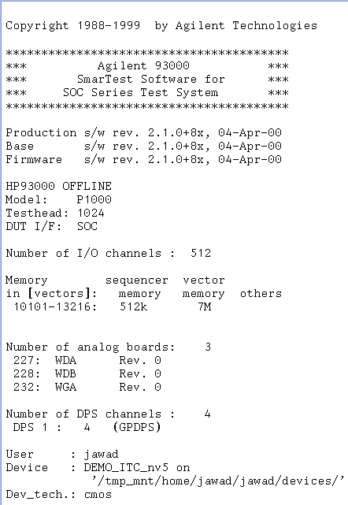

Verifying Available Test System Resources
Next, you need to compare the resource requirements from device tests to your tester configuration. Consider the following:
- Does your test system have the required test system resources (such as digital, analog, and power supply resources)?
- Do your test system resources have the required performance (such as clocking rate, digital data rate, swing level of generated analog waveform, sampling rate, accuracy, and so on) for test requirements?
- Does your test system have the necessary number of pins required to support the number of your DUT pins?
When starting up the SmarTest software, the report window displays a list of all test system resources that are installed in your test system. You can check your system's configuration as shown by the example of the following figure.

If you plan to introduce a complete custom device test to V93000 test systems on other sites (such as in a production environment), you should also consider their configurations.
One of the intentions of vast tester resources is to provide the capability of efficient Multi-DUT parallel testing. Any DUT board, regardless of its size, can be designed for Multi-Site and catering to several DUTs.
Hence, you can use your test system to:
- test as many DUTs as possible using the maximum possible level (or that which is provided in your test system) of resources, or
- test one DUT using the absolute minimum of resources.
This flexibility allows you to efficiently and cost-effectively implement your test according to your own preferences, testing strategies, or any other trade-off considerations.
Once you have completed the test system resource estimation and established the DUT testing plans, you can then proceed to the more detailed steps of designing the DUT board.
Functional changes
- Introduced before SmarTest 6.3.2